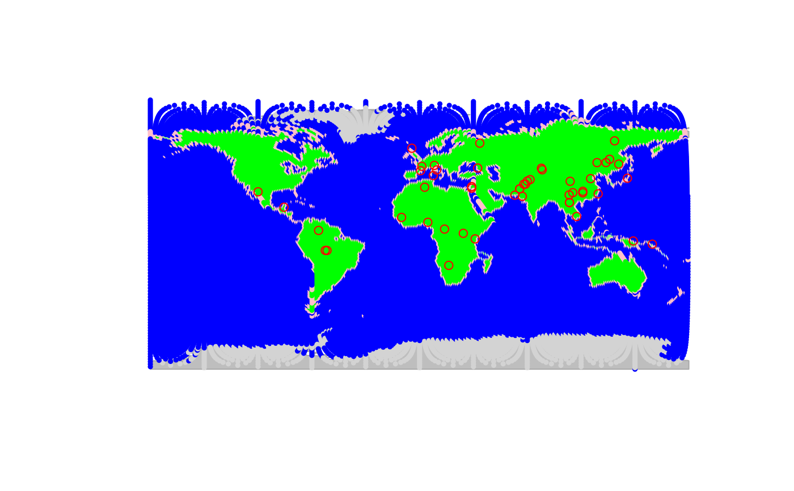
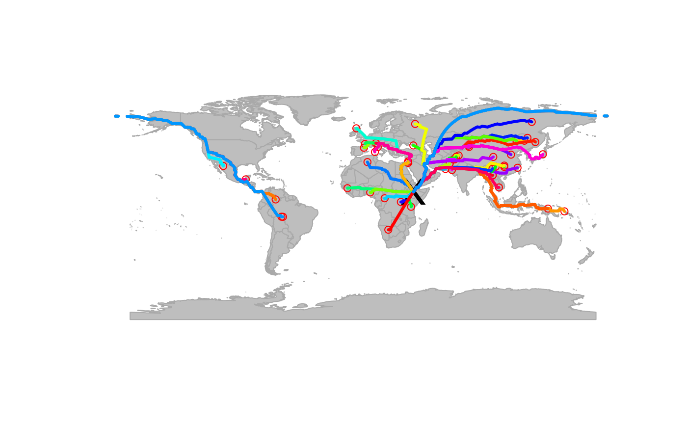
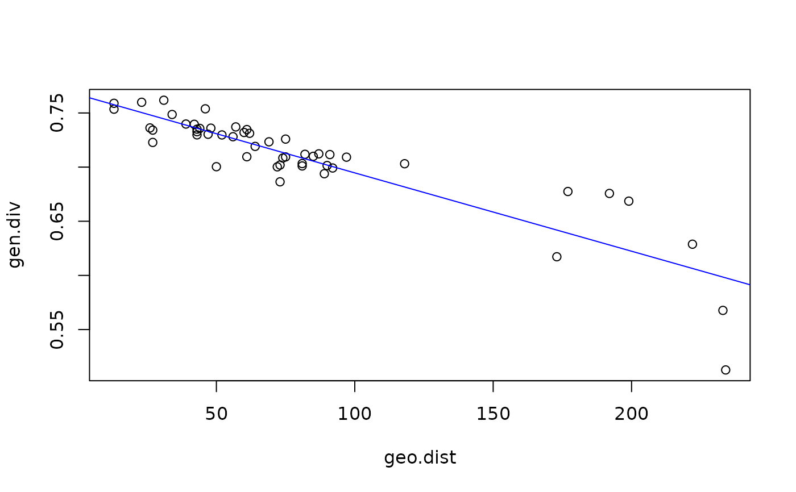

The datasets hgdp and hgdpPlus provides genetic diversity
several human populations worldwide. Both datasets are gData
objects, interfaced with the gGraph object
worldgraph.40k.
Format
hgdp is a gData object with the following slots:
- @coords
Coordinates (lon, lat) of each of the 52 population sampling locations.
- @nodes.id
Node identifiers of the underlying
gGraph(worldgraph.40k) matched to each population.- @data
Metadata associated with the populations, including population name, region, and genetic.div
Details
hgdp describes 52 populations from the original Human Genome
Diversity Panel.
hgdpPlus describes hgdp populations plus 24 native American
populations.
References
Cann, H. M. et al. (2002) A human genome diversity cell line panel. Science 296: 261-262. doi:10.1126/science.296.5566.261b
Examples
## check object
hgdp
#>
#> === gData object ===
#>
#> @coords: spatial coordinates of 52 nodes
#> lon lat
#> 1 -3 59
#> 2 39 44
#> 3 40 61
#> ...
#>
#> @nodes.id: 52 nodes identifiers
#> 28179 11012 22532
#> "26898" "11652" "22532"
#> ...
#>
#> @data: 52 data
#> Population Region Label n Latitude Longitude Genetic.Div
#> 1 Orcadian EUROPE 1 15 59 -3 0.7258820
#> 2 Adygei EUROPE 2 17 44 39 0.7297802
#> 3 Russian EUROPE 3 25 61 40 0.7319749
#> ...
#>
#> Associated gGraph: worldgraph.40k
## plotting the object
plot(hgdp)
#> Spherical geometry (s2) switched off
#> Spherical geometry (s2) switched on

## results from Handley et al.
## Addis Ababa
addis <- list(lon = 38.74, lat = 9.03)
addis <- closestNode(worldgraph.40k, addis) # this takes a while
## shortest path from Addis Ababa
myPath <- dijkstraFrom(hgdp, addis)
## plot results
plot(worldgraph.40k, col = NA)
#> Spherical geometry (s2) switched off
#> Spherical geometry (s2) switched on
points(hgdp)
points(worldgraph.40k[addis], psize = 3, pch = "x", col = "black")
plot(myPath)

## correlations distance/genetic div.
geo.dist <- gPath2dist(myPath)
gen.div <- getData(hgdp)$Genetic.Div
plot(gen.div ~ geo.dist)
abline(lm(gen.div ~ geo.dist), col = "blue")

summary(lm(gen.div ~ geo.dist))
#>
#> Call:
#> lm(formula = gen.div ~ geo.dist)
#>
#> Residuals:
#> Min 1Q Median 3Q Max
#> -0.085052 -0.006457 0.000735 0.009138 0.047553
#>
#> Coefficients:
#> Estimate Std. Error t value Pr(>|t|)
#> (Intercept) 7.670e-01 4.972e-03 154.28 <2e-16 ***
#> geo.dist -7.235e-04 5.166e-05 -14.01 <2e-16 ***
#> ---
#> Signif. codes: 0 ‘***’ 0.001 ‘**’ 0.01 ‘*’ 0.05 ‘.’ 0.1 ‘ ’ 1
#>
#> Residual standard error: 0.02043 on 50 degrees of freedom
#> Multiple R-squared: 0.7969, Adjusted R-squared: 0.7928
#> F-statistic: 196.1 on 1 and 50 DF, p-value: < 2.2e-16
#>